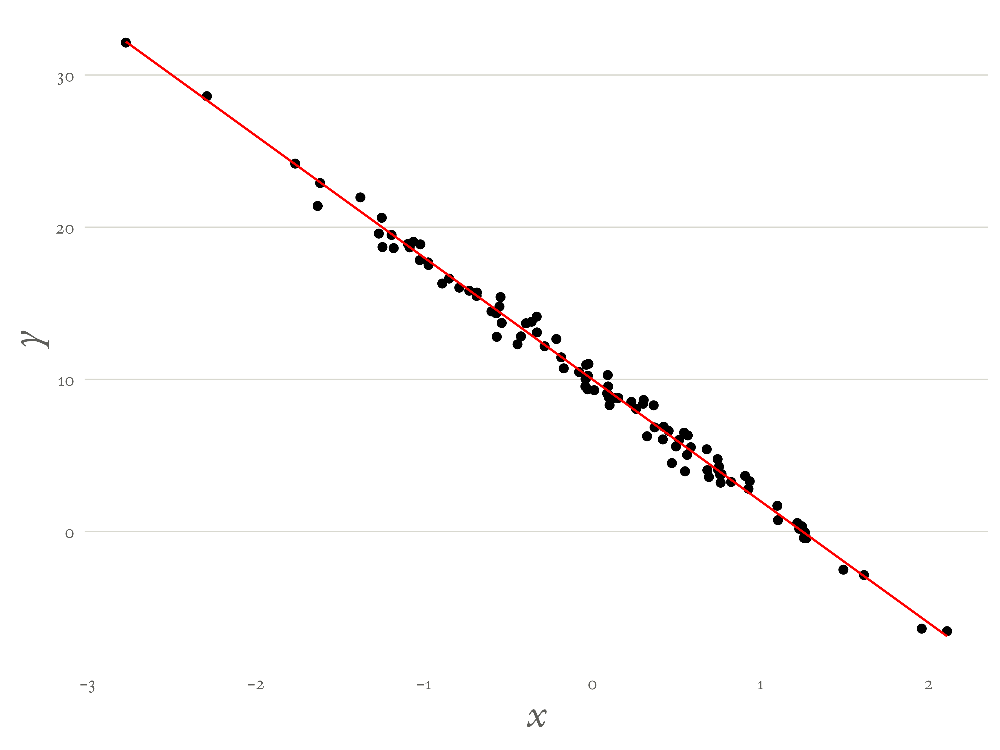
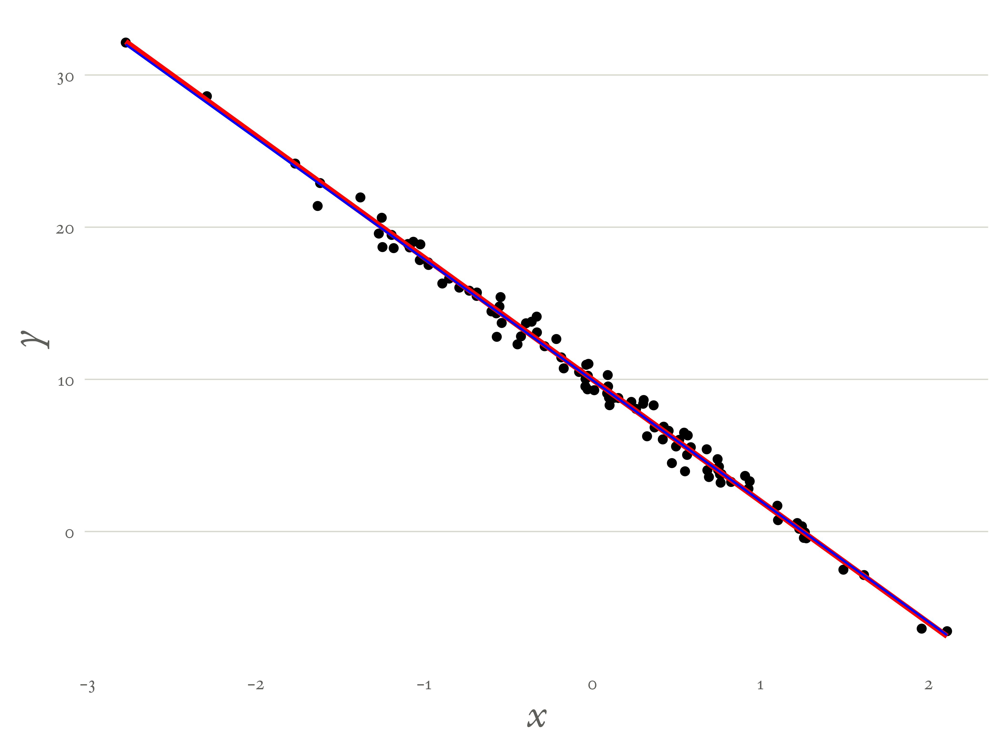
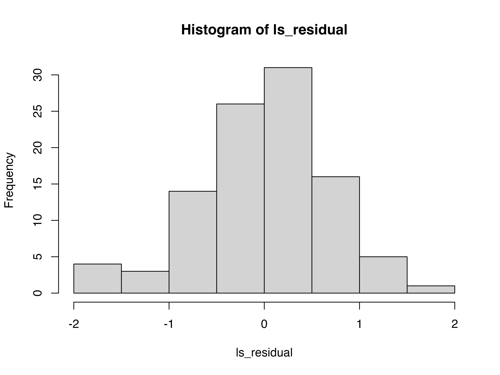
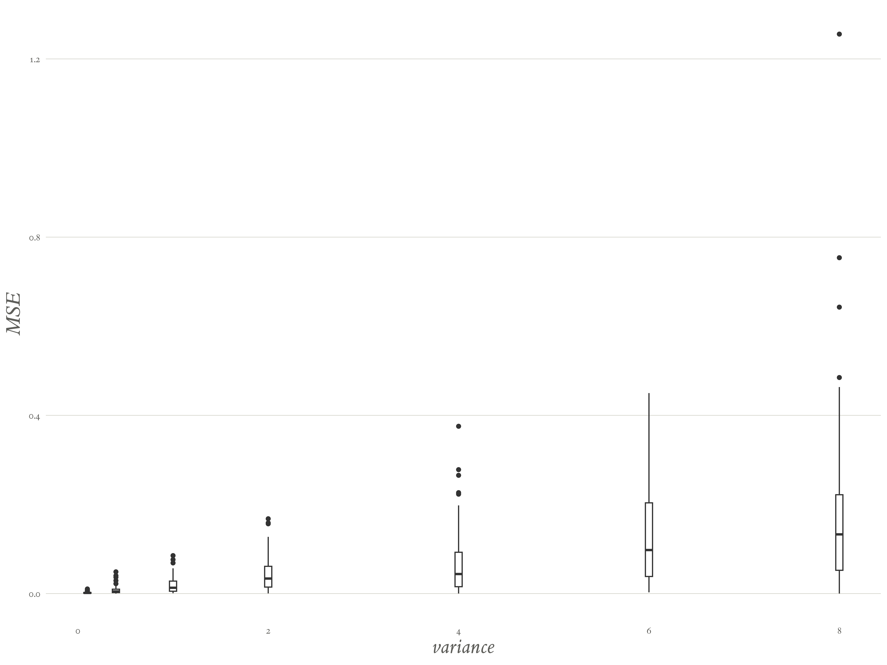

library(ggplot2)
library(reshape2)
library(bbmle)10 Linear regression
In this practical you will go through some of the basics of linear modelling in R as well as simulating data. The practical contains the following elements:
- simulate linear regression model
- investigate parameters
- characterize prediction accuracy
- correlation of real world data
We will make use of the following packages reshape2, ggplot2, and bbmle packages. If you are using your own machine you can use the install.packages() function to install them. Only do that once you have confirmed they are not already installed.
10.1 Data
For this practical you will require three datasets, more information about downloading them here.
For today you will only need the files in the linear regression section.
10.2 Simulating data for regression
You will simulate data based on the simple linear regression model:
\[ y_i = \beta_0 + \beta_1\, x_i + \epsilon_i, \]
where \((x_i, y_i)\) represent the \(i\)-th measurement pair with \(i = 1, \ldots, N\), \(\beta_0\) and \(\beta_1\) are regression coefficients representing intercept and slope respectively. We assume the noise term \(\epsilon_i \sim N(0, \sigma^2)\) is normally distributed with zero mean and variance \(\sigma^2\). {-} First we define the values of the parameters of linear regression \((\beta_0, \beta_1, \sigma^2)\):
b0 <- 10 # regression coefficient for intercept
b1 <- -8 # regression coefficient for slope
sigma2 <- 0.5 # noise varianceIn the next step we will simulate \(N = 100\) covariates \(x_i\) by randomly sampling from the standard normal distribution:
set.seed(198) # set a seed to ensure data is reproducible
N <- 100 # no of data points to simulate
x <- rnorm(N, mean = 0, sd = 1) # simulate covariateNext we simulate the error term:
# simulate the noise terms, rnorm requires the standard deviation
e <- rnorm(N, mean = 0, sd = sqrt(sigma2))Finally we have all the parameters and variables to simulate the response variable \(y\):
# compute (simulate) the response variable
y <- b0 + b1 * x + eWe will plot our data using ggplot2 so the data need to be in a data.frame object:
# Set up the data point
sim_data <- data.frame(x = x, y = y)
# create a new scatter plot using ggplot2
ggplot(sim_data, aes(x = x, y = y)) +
geom_point()

We define the true data y_true to be the true linear relationship between the covariate and the response without the noise.
# Compute true y values
y_true <- b0 + b1 * x
# Add the data to the existing data frame
sim_data$y_true <- y_trueNow we will add the true values of \(y\) to the scatter plot:
lr_plot <- ggplot(sim_data, aes(x = x, y = y)) +
geom_point() +
geom_line(aes(x = x, y = y_true), colour = "red")
print(lr_plot)
10.3 Fitting simple linear regression model
10.3.1 Least squared estimation
Now that you have simulated data you can use it to regress \(y\) on \(x\), since this is simulated data we know the parameters and can make a comparison. In R we can use the function lm() for this, by default it implements a least squares estimate:
# Use the lm function to fit the data
ls_fit <- lm(y ~ x, data = sim_data)
# Display a summary of fit
summary(ls_fit)#>
#> Call:
#> lm(formula = y ~ x, data = sim_data)
#>
#> Residuals:
#> Min 1Q Median 3Q Max
#> -1.69905 -0.41534 0.02851 0.41265 1.53651
#>
#> Coefficients:
#> Estimate Std. Error t value Pr(>|t|)
#> (Intercept) 9.95698 0.06701 148.6 <2e-16 ***
#> x -7.94702 0.07417 -107.1 <2e-16 ***
#> ---
#> Signif. codes:
#> 0 '***' 0.001 '**' 0.01 '*' 0.05 '.' 0.1 ' ' 1
#>
#> Residual standard error: 0.6701 on 98 degrees of freedom
#> Multiple R-squared: 0.9915, Adjusted R-squared: 0.9914
#> F-statistic: 1.148e+04 on 1 and 98 DF, p-value: < 2.2e-16The output for lm() is an object (in this case ls_fit) which contains multiple variables. To access them there are some built in functions, e.g. coef(), residuals(), and fitted(). We will explore these in turn:
# Extract coefficients as a named vector
ls_coef <- coef(ls_fit)
print(ls_coef)#> (Intercept) x
#> 9.956981 -7.947016# Extract intercept and slope
b0_hat <- ls_coef[1] # alternative ls_fit$coefficients[1]
b1_hat <- ls_coef[2] # alternative ls_fit$coefficients[2]
# Generate the predicted data based on estimated parameters
y_hat <- b0_hat + b1_hat * x
sim_data$y_hat <- y_hat # add to the existing data frame
# Create scatter plot and lines for the original and fitted
lr_plot <- ggplot(sim_data, aes(x = x, y = y)) +
geom_point() +
geom_line(aes(x = x, y = y_true), colour = "red", size = 1.3) +
# plot predicted relationship in blue
geom_line(aes(x = x, y = y_hat), colour = "blue")#> Warning: Using `size` aesthetic for lines was deprecated in ggplot2
#> 3.4.0.
#> ℹ Please use `linewidth` instead.# force Rstudio to display the plot
print(lr_plot)
The estimated parameters and the plot shows a good correspondence between fitted regression parameters and the true relationship between \(y\) and \(x\). We can check this by plotting the residuals, this data is stored as the residuals parameter in the ls_fit object.
# Residuals
ls_residual <- residuals(ls_fit) # can also be accessed via ls_fit$residuals
# scatter plot of residuals
plot(ls_residual)A better way of summarising the data is to visualise them as a histogram:
hist(ls_residual)
We expect the mean and variance of the residuals to be close to the level used to generate the data.
print(mean(ls_residual))#> [1] -3.885781e-17print(var(ls_residual))#> [1] 0.4444955This is as expected since subtracting a good fit from the data leaves \(\epsilon\) which has \(0\) mean and \(0.5\) variance.
exercise 10.1
Linear Regression Diagnostics Function
Now let us create a function that will take as input a vector of responses and a vector of covariates, fit a simple linear regression model, and output a list that contains the following:
- estimated coefficients, as
coef - residuals, as
resid - fitted values, as
fitted - the linear regression
lmobject, aslm_obj
The function name should be lr_diagnostics.
10.3.2 Maximum likelihood estimation
Next you will look at maximum likelihood estimation based on the same data you simulated earlier. This is a bit more involved as it requires you to explicitly write the function you wish to minimise. The function we use is part of the bbmle package.
# Loading the required package
library(bbmle)
# function that will be minimised. It takes as arguments all parameters
# Here we are helped by the way R works we don't have to explicitly pass x.
# The function will use the existing estimates in the environment
mle_ll <- function(beta0, beta1, sigma) {
# first we predict the response variable based on the guess for our response
y_pred = beta0 + beta1 * x
# next we calculate the normal distribution based on the predicted value
# the guess for sigma and return the log
log_lh <- dnorm(y, mean = y_pred, sd = sigma, log = TRUE)
# We returnr the negative sum of the log likelihood
return(-sum(log_lh))
}
# This is the function that actually performs the estimation
# The first variable here is the function we will use
# The second variable passed is a list of initial guesses of parameters
mle_fit <- mle2(mle_ll, start = list(beta0 = -1, beta1 = 20, sigma = 10))
# With the same summary function as above we can output a summary of the fit
summary(mle_fit)#> Maximum likelihood estimation
#>
#> Call:
#> mle2(minuslogl = mle_ll, start = list(beta0 = -1, beta1 = 20,
#> sigma = 10))
#>
#> Coefficients:
#> Estimate Std. Error z value Pr(z)
#> beta0 9.957019 0.066336 150.099 < 2.2e-16 ***
#> beta1 -7.947005 0.073426 -108.231 < 2.2e-16 ***
#> sigma 0.663347 0.046904 14.143 < 2.2e-16 ***
#> ---
#> Signif. codes:
#> 0 '***' 0.001 '**' 0.01 '*' 0.05 '.' 0.1 ' ' 1
#>
#> -2 log L: 201.7011The estimated parameters using the maximum likelihood are also a very good estimate of the true values.
10.4 Effect of variance
Now investigate the quality of the predictions further by simulating more data sets and seeing how the variance affects the quality of the fit as indicated by the mean-squared error (mse).
Let us break this task into multiple steps. First let us consider the problem we are trying to address and what we need to do:
- We will simulate data sets with different variances
- For each data set we will fit a linear regression model
- We will compute the mean-squared error between the fitted values and the true values
Based on this we can create functions to perform each task. Let us start with the function that will simulate the data. For the data simulation we need values for the parameters \((\beta_0, \beta_1, \sigma^2)\) and the number of data points \(N\).
simulate_data <- function(b0, b1, sigma2, N) {
# simulate the covariate
x <- rnorm(N, mean = 0, sd = 1)
# simulate the noise terms, rnorm requires the standard deviation
e <- rnorm(N, mean = 0, sd = sqrt(sigma2))
# compute (simulate) the response variable
y <- b0 + b1 * x + e
return(data.frame(x = x, y = y))
}This is a very basic function that we will only use internally. Therfore we are not adding any error checking or other niceties. The next function we need is one that will take a data frame with \(x\) and \(y\) and fit a linear regression model and return the lm object.
fit_slm <- function(data) {
return(lm(y ~ x, data = data))
}This is a very simple function that just wraps the lm() function. In this very simple case it is not strictly necessary, but it makes the code more readable. We will see in the next practical why this is useful. The final function we need is one that will compute the mean-squared error between the fitted values and the true values.
compute_mse <- function(lm_fit, b0, b1) {
# extract the fitted values
y_hat <- fitted(lm_fit)
# extract the x values from the model frame
x <- lm_fit$model$x
# compute the true y values
y_true <- b0 + b1 * x
# compute and return the mean-squared error
return(mean((y_hat - y_true)^2))
}Note, we didn’t pass the data frame to this function, instead we extract the \(x\) values from the lm object. This is a bit more robust as it ensures that we are using the same \(x\) values as were used in the fit. We now have all the functions we need to perform the analysis. We will use a nested for loop to loop over different variances and for each variance we will repeat the simulation multiple times.
Once you have created the functions above you should test them to ensure they work as expected. You can do this by simulating a small data set and running the functions in sequence.
# test the functions
test_data <- simulate_data(b0 = 10, b1 = -8, sigma2 = 0.5, N = 100)
lm_fit <- fit_slm(test_data)
mse <- compute_mse(lm_fit, b0 = 10, b1 = -8)
print(mse)#> [1] 0.01738038Now that we have everything together we can run the analysis. We will try a range of variances and for each variance we will repeat the simulation 100 times. We will store the results in a matrix which we will convert to a data frame for plotting.
Based on this we can can create a final function that will perform the analysis. This function will take as input the parameters \((\beta_0, \beta_1)\), a vector of variances to try, the number of data points \(N\), and the number of simulations to run for each variance.
analyze_variance_effect <- function(b0, b1, sigma_v, N, n_simulations) {
n_sigma <- length(sigma_v)
# Create a matrix to store results
mse_matrix <- matrix(0, nrow = n_simulations, ncol = n_sigma)
# name row and column
rownames(mse_matrix) <- c(1:n_simulations)
colnames(mse_matrix) <- sigma_v
# loop over variance
for (i in 1:n_sigma) {
sigma2 <- sigma_v[i]
# for each simulation
for (it in 1:n_simulations) {
# simulate the data
sim_data <- simulate_data(b0, b1, sigma2, N)
# fit the linear regression model
lm_fit <- fit_slm(sim_data)
# compute the mean squared error between the fit and the actual y's
mse_matrix[it, i] <- compute_mse(lm_fit, b0, b1)
}
}
return(mse_matrix)
}This function will return a matrix with the mean-squared errors for each simulation and variance. We can now set the parameters, call the functions and plot the results.
# number of simulations for each variance level
n_simulations <- 100
# A vector of variance levels to try
sigma_v <- c(0.1, 0.4, 1.0, 2.0, 4.0, 6.0, 8.0)
# number of data points
N <- 100
# Set the parameters
b0 <- 10 # regression coefficient for intercept
b1 <- -8 # regression coefficient for slope
# run the analysis
mse_results <- analyze_variance_effect(b0, b1, sigma_v, N, n_simulations)
print(mse_results[1:5, 1:3]) # print a subset of the results#> 0.1 0.4 1
#> 1 0.0018653072 0.001529142 0.022890396
#> 2 0.0006060716 0.007175884 0.005308991
#> 3 0.0022200508 0.001375822 0.005990769
#> 4 0.0009563890 0.008649337 0.003157107
#> 5 0.0029775013 0.007083853 0.003044801We created a matrix to store the mse values, but to plot them using ggplot2 we have to convert them to a data.frame. This can be done using the melt() function form the reshape2 library. We can compare the results using boxplots.
library(reshape2)
# convert the matrix into a data frame for ggplot2
mse_df <- melt(mse_results)
# rename the columns
names(mse_df) <- c("Simulation", "variance", "MSE")
# now use a boxplot to look at the relationship between
# mean-squared prediction error and variance
mse_plt <- ggplot(mse_df, aes(x = variance, y = MSE)) +
geom_boxplot(aes(group = variance))
print(mse_plt)
You can see that the variances of the mse and the value of the mse go up with increasing variance in the simulation.
What changes do you need to make to the above function to plot the accuracy of the estimated regression coefficients as a function of variance?
exercise 10.2
Correlation
Read in the data in stork.txt, compute the correlation and comment on it.
The data represents no of storks (column 1) in Oldenburg Germany from \(1930 - 1939\) and the number of people (column 2).
exercise 10.3
Linear Regression
Fit a simple linear model to the two data sets supplied (lr_data1.Rdata and lr_data2.Rdata). In both files the \((x,y)\) data is saved in two vectors, \(x\) and \(y\).
Download the data (see above), you can read it into R and plot it with the following commands:
load("lr_data1.Rdata")
plot(x, y)load("lr_data2.Rdata")
plot(x, y)Fit the linear model and comment on the differences between the two data-sets you have used here.
exercise 10.4
Linear Regression
Investigate how the sample size will affect the quality of the fit using mse, use the code for investigating the affect of variance as inspiration.